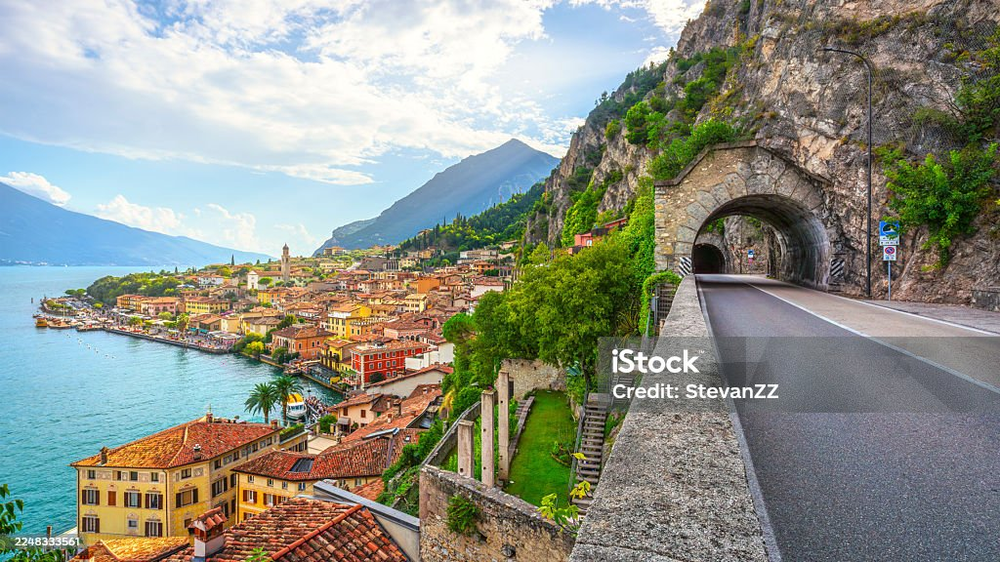
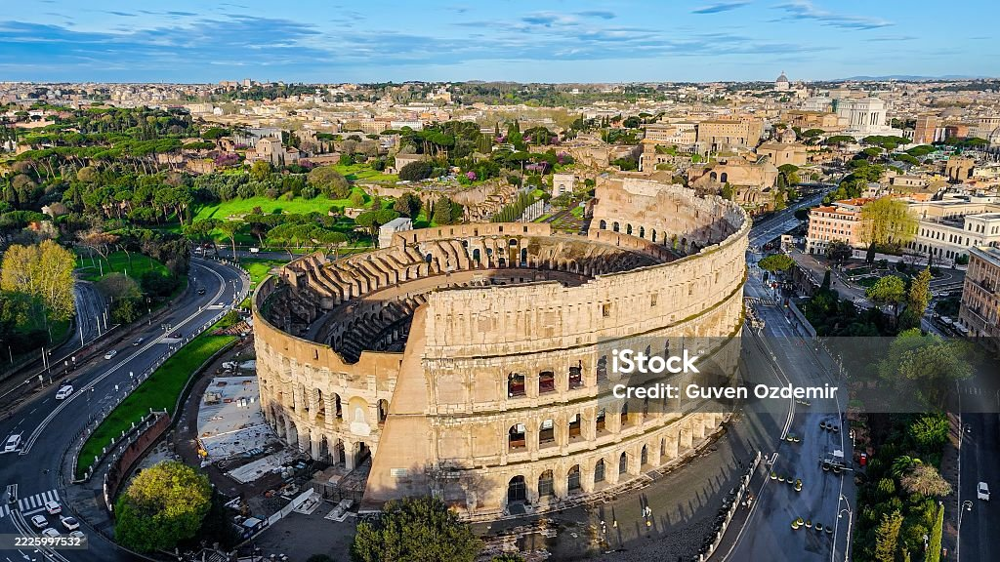

1. Lugares mágicos

En este apartado puede encontrar nuestra oferta de destinos, concebidos para permitir una inmersión cultural y linguistica entre territorios donde la magia se respira en cada esquina.
Conocimiento para transformar el futuro

En este apartado puede encontrar nuestra oferta de destinos, concebidos para permitir una inmersión cultural y linguistica entre territorios donde la magia se respira en cada esquina.

Estos son nuestras aventuras con inscripciones disponibles. Subete a este viaje y comencemos a soñar tus próximos pasos
Este es un espacio para viajeros que quieren incorporar un nuevo idioma y descubrir las historias de los locales